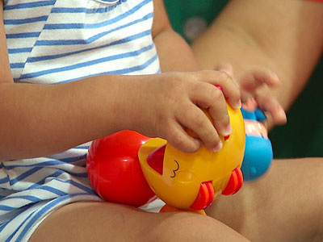

Cuando hay niños en casa
Los niños aprenden a través del comportamiento de los demás, especialmente de sus padres. Por eso, es tan importante vuestra actitud ante el cáncer, cómo vivís y afrontáis esta nueva situación, así como la comunicación que mantenéis con ellos.
Ocultarles la situación o evitar hablar de ello no les va a proteger, ya que ellos perciben que algo te pasa en el entorno familiar.
Es importante que caminéis juntos, que habléis y que toméis decisiones conjuntas, que vayáis solucionando los problemas diarios que puedan surgir y que mantengáis vuestras rutinas en la medida de lo posible, de tal forma que el cáncer no se convierta en único eje de vuestras vidas.

¿Cómo puedo facilitar la adaptación de mis hijos?
-
Lo mejor es que les deis juntos la información sobre tu enfermedad. Si no es posible, es conveniente que al menos lo hagáis uno de los padres.
-
Es aconsejable que les informéis lo antes posible, para evitar que se imaginen una situación distinta y que puede ser mucho peor de lo que es en realidad.
-
Responded a sus dudas sobre la enfermedad y los tratamientos. Vuestro apoyo, la naturalidad y la ayuda serán muy importantes para ellos.
-
No les ocultéis la verdad sobre las pruebas y tratamientos. Explicadles la situación teniendo en cuenta su edad y madurez cognitiva, utilizando un lenguaje sencillo y claro. Los niños con 8 o más años necesitan más información que los pequeños. Dejad que expresen sus sentimientos y así evitaréis que se sientan solos o abrumados.
-
Aclaradles algunas ideas erróneas sobre el cáncer, que les pueden generar mucha angustia. Los niños pueden pensar que es una enfermedad contagiosa, incurable, que ellos son los responsables de la enfermedad o que también van a enfermar.
-
Pedid la colaboración a otros familiares y amigos para que os ayuden y puedan permanecer con los niños para ir a los tratamientos o pruebas médicas. No os sintáis culpables por ello.
-
Preparadles para los cambios físicos que puedan derivarse de la enfermedad o los tratamientos. Si podéis, hablad con vuestros hijos antes para que estén preparados.
- Contactad con los profesores y tutores de vuestros hijos para informarles de la situación lo antes posible.